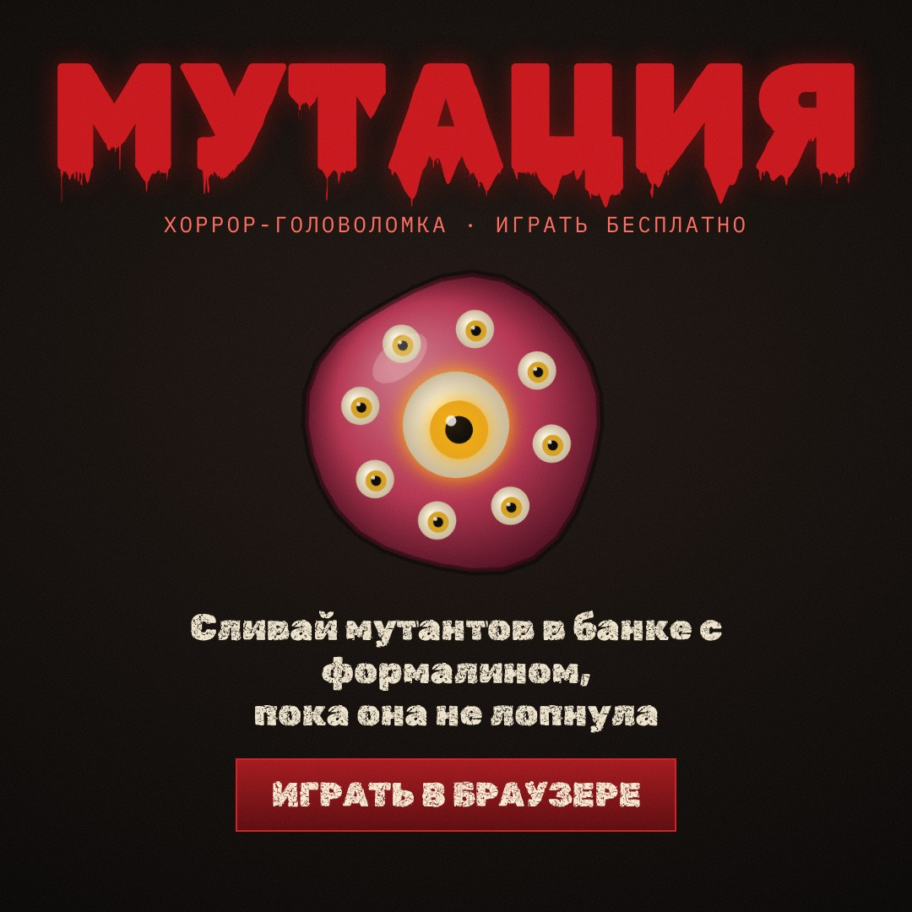
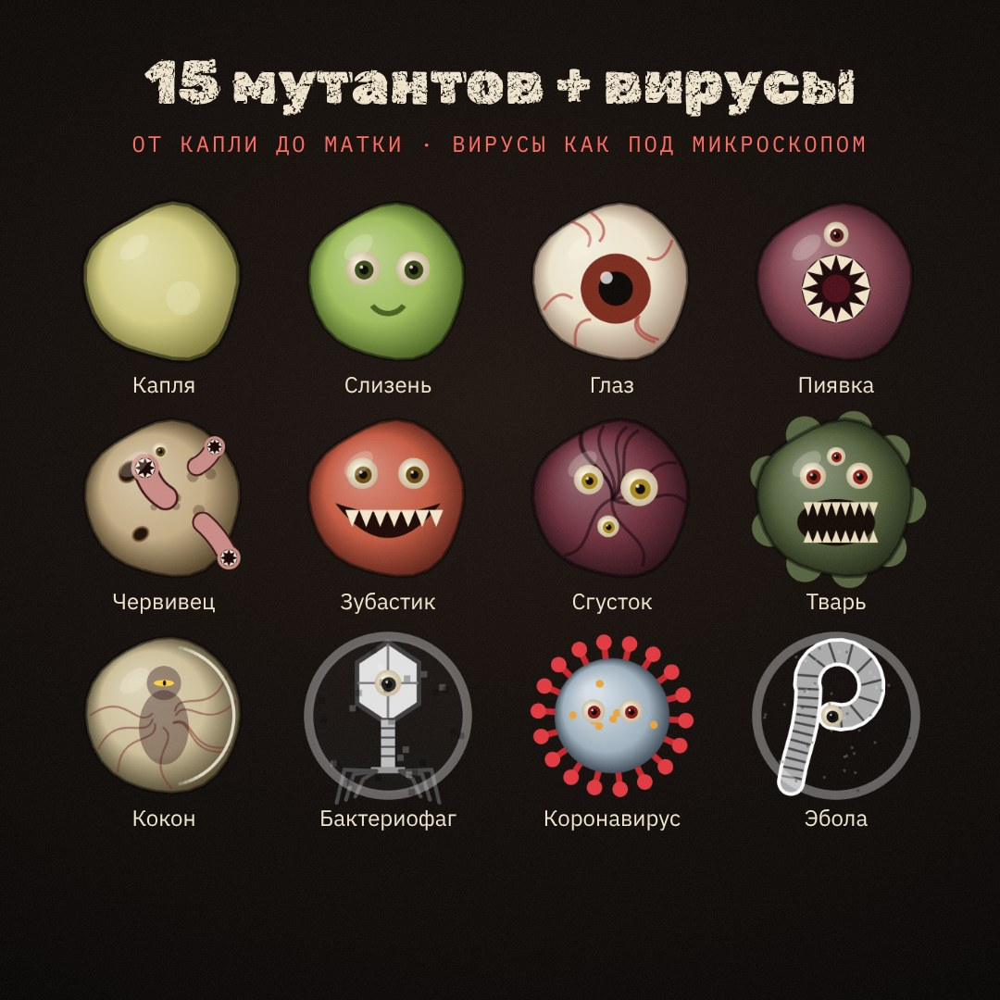
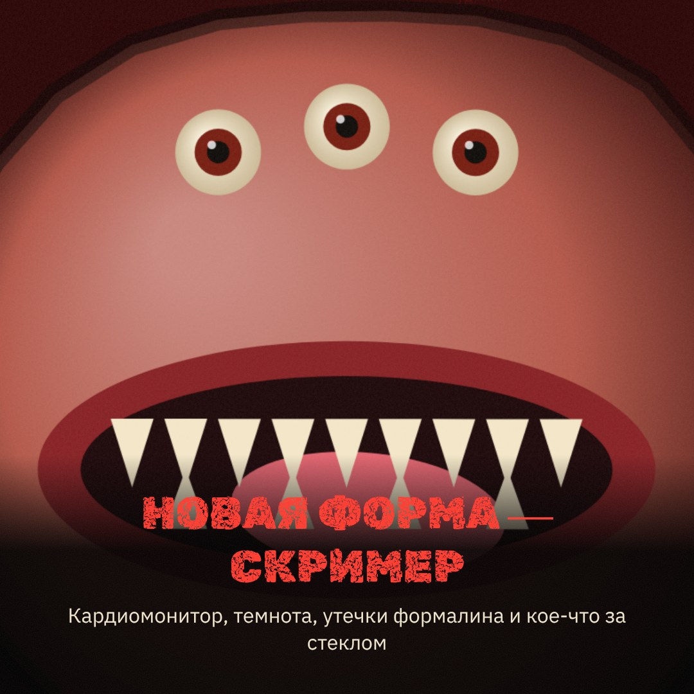
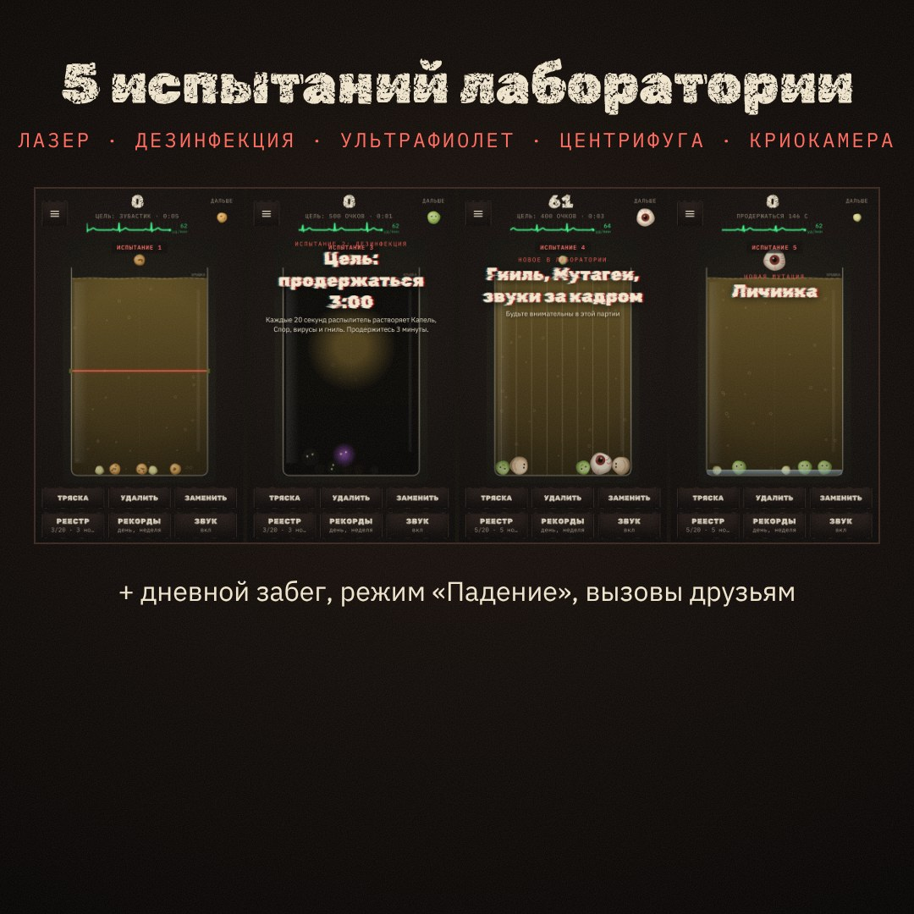

Мутация
Бесплатная хоррор-головоломка в браузере. Банка с формалином, ночная лаборатория и существа, которые срастаются, если положить их рядом. Сливай одинаковых — они мутируют. Не дай банке переполниться.
Играть бесплатноЧто это за игра
Ты — лаборант ночной смены. В банку падают образцы: капли, споры, слизни, личинки. Два одинаковых существа, коснувшись друг друга, сливаются в следующую, более жуткую форму и приносят очки. Чем крупнее мутант, тем меньше места в банке. Игра заканчивается, когда содержимое переливается через край.
- Как в тетрисе: мутант падает сам; как только он лёг на дно или на кучу — сверху выпадает следующий. Ведёшь его пальцем, касание — упадёт быстрее. С каждым уровнем — быстрее.
- Зачистка: крупные мутанты исчезают группами — 3 Зубастика; по 4 Многоглаза, Мозгляка или Сгустка; по 5 Пастей, Тварей или Коконов; по 6 Маток. Очки за зачистку — вдвое.
- Физика: существа катятся, давят друг друга и застревают — каждый мутант меняет всю банку.
- Аномалии: гниль, паразит, мутаген, кислота, зеркало, магнит, матка паразитов, зубастый червь и кукла — у каждой своё правило.
- Атмосфера: гаснет свет, протекает формалин, стучит сердце и пищит кардиомонитор, по стеклу кто-то стучит. Скримеры можно выключить.
- Журнал лаборанта: у каждого найденного мутанта есть запись — вместе они складываются в историю лаборатории.
Режимы
- Классика — случайные образцы падают сами, уровень растёт каждые 30 мутантов: быстрее, крупнее, лаборатория подсыпает лишнее.
- Падение — то же, но быстрее с самого начала: скорость растёт каждые 500 очков.
- Испытания — прицельный бросок: 5 уровней с особыми механиками: «Лазерная решётка», «Дезинфекция», «Ультрафиолет», «Центрифуга», «Криокамера».
- Дневной забег — у всех игроков одинаковые образцы, общая таблица рекордов дня и недели.
- Банки с правилами: обычная, вязкая, узкая колба, трясущаяся и тёмная.
- Вызов другу: отправь ссылку со своим результатом — друг сыграет те же образцы.
- Спокойный режим — без скримеров и резких эффектов, для тех, кто хочет просто головоломку.
Мутанты
Основная цепочка, от самого маленького к самому большому: Капля → Спора → Слизень → Личинка → Глаз → Пиявка → Червивец → Зубастик → Многоглаз → Мозгляк → Сгусток → Пасть → Тварь → Кокон → Матка. Вывести Матку — главная цель лаборанта.
Отдельная вирусная ветка в чёрно-белом стиле электронного микроскопа, по мотивам настоящих вирусов: Бактериофаг, Коронавирус, Грипп, Бешенство, Эбола.
Финал цепочки — Улей: в него срастаются две Матки. Ветка «Объекты НИИ» из спецхрана: Ампула-7 → Противогаз → Крыса НИИ → Объект-0. Редкие гибриды (примерно 1 из 70 слияний): Двухголовый слизень, Глазопасть, Пиявка-альбинос, Сиамский зубастик, Светящийся мозгляк.
Семь семейств — 35 мутантов
Каждый день в лабораторию попадает своё семейство дня. Мутанты семейства сливаются между собой, а две старшие формы превращаются в мутанта основной цепочки.
- Глубоководные: Светлячок, Удильщик, Мешкорот, Кальмар-призрак, Левиафан → Тварь.
- Грибница: Плесень, Поганка, Трутовик, Мицелий, Грибное сердце → Мозгляк.
- Рой: Мошка, Клещ, Таракан, Богомол, Королева роя → Кокон.
- Болото: Ряска, Головастик, Жаболицый, Тиняк, Болотник → Пасть.
- Кукольный цех: Пуговица, Тряпичник, Фарфоровая голова, Марионетка, Кукловод → Многоглаз.
- Зона: Изотоп, Ржавник, Свинорыл, Фонящий, Реактор → Сгусток.
- Метеорит: Звёздная пыль, Метеоспора, Щупальце, Око бездны, Гость → Матка.
Задания на день, достижения и серии дней без пропусков открывают новые события лаборатории постепенно.
Картинки




Управление
На телефоне: веди пальцем влево-вправо — падающий мутант следует за пальцем. Коснись или смахни вниз — упадёт быстрее (или кнопка «Вниз»). В испытаниях — прицелься и отпусти.
На компьютере: то же мышью, или ← →, а ↓ или Пробел — быстрее вниз.
Частые вопросы
Это бесплатно?
Да, играть можно бесплатно, всё содержимое игры открыто всем. В бесплатной игре иногда показывается реклама, а за деньги можно отключить её и украсить банку. Подробнее — на странице «Цены».
Нужна ли регистрация?
Нет. Прогресс хранится на устройстве. Для таблицы рекордов можно указать любое имя — или не указывать.
Можно установить как приложение?
Да. В Safari на iPhone: «Поделиться» → «На экран „Домой“». В Chrome на Android: меню → «Добавить на главный экран». Игра откроется во весь экран и работает без интернета.
Слишком страшно / мерцает экран
В меню выключи «Хоррор-эффекты» или включи «Спокойный режим». Если у вас светочувствительная эпилепсия, играйте только в спокойном режиме.
Для какого возраста?
16+: в игре есть скримеры, кровь и пугающие образы.
Создатель
Игру придумал и делает Моисеенко Константин Иванович. Предложения, ошибки и отзывы — на piter_00000@mail.ru. Шрифты Rubik и IBM Plex — по лицензии SIL Open Font License, физика — библиотека Matter.js (MIT).
Играть бесплатно